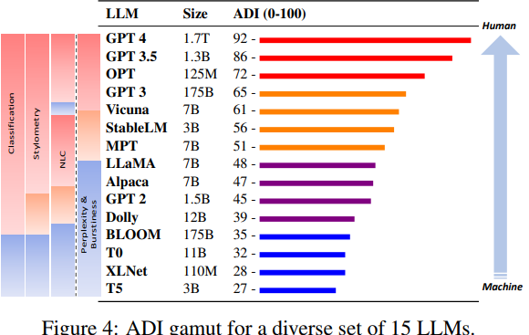
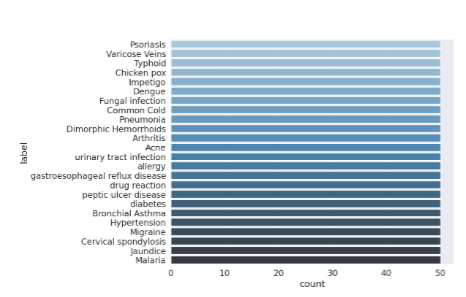
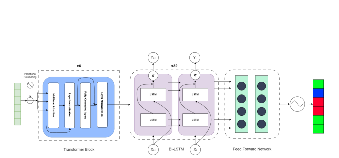

|
Krish Sharma I'm an undergraduate student at the National Institute Of Technology Silchar in India, with nearly two years of research experience in the field of Natural Language Processing (NLP) and Artificial Intelligence (AI). I've worked as a research intern at the University of South Carolina's AIISC lab, where I contributed to the "Counter Turing Test" project. This work focused on the robustness of AI-generated text detection and introduced the ADI index, resulting in a paper accepted at EMNLP 2023, which was awarded the Outstanding Paper Award. Currently, I'm collaborating with Prof. Nicholas Asher at the IRIT Lab on developing a novel Number Embedding system for Transformers, aimed at enhancing the numerical capabilities of Large Language Models (LLMs) for ICLR 2025. |

|
My InterestI'm deeply interested in several key areas within Natural Language Processing (NLP) and Artificial Intelligence (AI), focusing primarily on: Language Modeling and Understanding: My research aims to advance the capabilities of Large Language Models (LLMs) in understanding and generating human language. This includes improving their ability to grasp context, semantics, and nuances in communication, making them more effective in real-world applications. Reasoning and Logical Inference: I am fascinated by the challenge of equipping AI systems with robust reasoning and logical inference abilities. My goal is to develop models that can perform complex tasks involving logical deductions, mathematical reasoning, and problem-solving, which are critical for applications in various fields, from education to automated decision-making. Knowledge Retrieval and Integration: Another area of interest is enhancing how LLMs retrieve, integrate, and apply knowledge from vast datasets. I aim to improve the efficiency and accuracy of these processes, enabling models to provide more precise and relevant information in response to user queries. AI Robustness and Fairness: Ensuring that AI systems are robust, fair, and unbiased is a crucial aspect of my research. This involves developing techniques to detect and mitigate biases in AI-generated content and improving the models' robustness against adversarial attacks and other vulnerabilities. |
Research
|

|
Counter Turing Test (CT2): AI-Generated Text Detection is Not as Easy as You May Think - Introducing AI Detectability Index (ADI)
Krish Sharma, Aman Chadda, Amitava Das, Vinija Jain and Co Authors EMNLP, 2023 Explores the robustness of current techniques in detecting AI-generated text and introduced the ADI index. |
|

|
A transformer-based approach to automate disease prediction from patient descriptions
Krish Sharma Niyar Barman*, Ranjay Hazra*, IEEE CICT, 2023 Link This work introduces a natural language dataset in which patients describe their conditions to doctors, demonstrating the potential of transformer-based models to predict diseases from these patient descriptions. |
|

|
Addressing Hate Speech: ATLANTIS for Efficient Hate Span Detection.
Krish Sharma, Niyar Barman*, and Co Authors CEUR Workshop, 2023 This paper presents a transformer-based approach for hate span classification, which earned second prize at the CEUR workshop. |